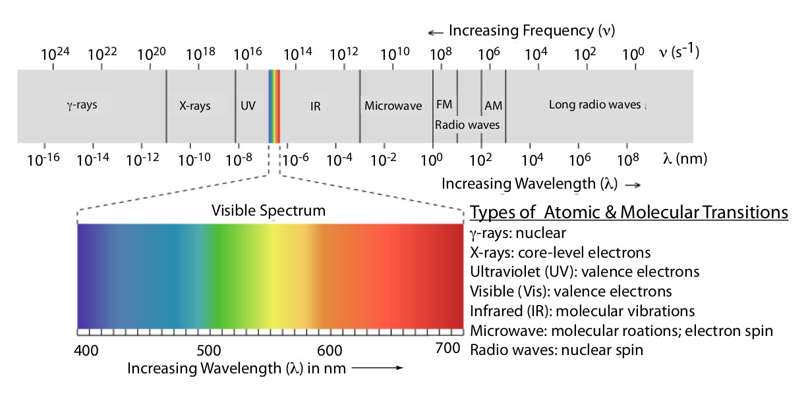

layout: true .footer[ - <div class="tooltip"><a href="/"><i class="fas fa-home"></i></a> <span class="tooltiptext">Go to C370 Main Page</span></div> - <div class="tooltip"><a href="/lecture-slides"><i class="fas fa-chalkboard-teacher"></i></a><span class="tooltiptext">Go to Lecture List</span></div> - <div class="tooltip"><i class="fas fa-question"></i><span class="tooltiptext">Press <kbd>Shift</Kbd> + <kbd>?</kbd> for Navigation Tips!</span></div> ] --- class: center <!-- ========================= Title Slide ============================= --> <div style="margin-top: 100px;"></div> <h1 style = "text-align: left; font-weight: bold; margin-left: 175px;">Week 6: Spectroscopy Intro</h1> <h5 style = "text-align: left; font-weight: bold; margin-left: 175px;">Harvey Chs 10</h5> <img src="https://upload.wikimedia.org/wikipedia/commons/f/f5/Light_dispersion_conceptual_waves.gif" style = "height:250px; margin-left: auto; margin-right: auto; display: block;"> --- # Spectroscopy > **Spectroscopy** is the study of the interaction of *light* and *matter*. <img src="https://upload.wikimedia.org/wikipedia/commons/3/30/EM_spectrumrevised.png" style = "height: 300px; margin-left: auto; margin-right: auto; display: block;"> .image-credit[[Philip Ronan, Gringer](https://commons.wikimedia.org/wiki/File:EM_spectrumrevised.png) / [CC BY-SA](https://creativecommons.org/licenses/by-sa/3.0)] --- # Light as a Wave  .image-credit[[Onde electromagnetique by SuperManu, via Wikimedia.org](https://commons.wikimedia.org/wiki/File:Onde_electromagnetique.svg) [CC-BY-SA 3.0](http://creativecommons.org/licenses/by-sa/3.0/)] --- # Electromagnetic Spectrum  .image-credit[David Harvey / [Analytical Chemistry 2.1](https://chem.libretexts.org/Bookshelves/Analytical_Chemistry/Book%3A_Analytical_Chemistry_2.1_%28Harvey%29) / [CC BY-SA 4.0](https://creativecommons.org/licenses/by-sa/3.0/at/deed.en)] --- # Example: Sodium > In 1817, Josef Fraunhofer studied the spectrum of solar radiation, observing a continuous spectrum with numerous dark lines. Fraunhofer labeled the most prominent of the dark lines with letters. In 1859, Gustav Kirchhoff showed that the D line in the sun’s spectrum was due to the absorption of solar radiation by sodium atoms. The wavelength of the sodium D line is 589 nm. What are the frequency and the wavenumber for this line? What is the energy of a photon with $\lambda$ = 589 nm?  .image-credit[Public Domain Image, via [Wikimedia](https://commons.wikimedia.org/wiki/File:Fraunhofer_lines.svg)] <!-- =============================================================================== -->